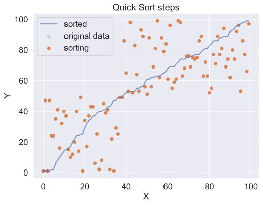

quicksort
sort an array by choosing a point in the array, called the pivot point, then creating two smaller arrays: Keep in mind an array of size one is already sorted, so no need to sort that.
- choose a point, called the pivot point
- make an array containing everything smaller or equal to the pivot
- second array containing everything bigger than the pivot
- so the answer is just quicksort(smaller_array) + pivot + quicksort(bigger_array)
first to generate some random data:
import random
import numpy as np
random_data = [random.randint(0,100) for i in range(10)]
random_data[:10]
[45, 66, 96, 78, 5, 50, 80, 78, 36, 4]
def quicksort(data):
if len(data) < 2:
return data
else:
pivot = data[0]
less = [i for i in data[1:] if i <= pivot]
more = [i for i in data[1:] if i > pivot]
return quicksort(less) + [pivot] + quicksort(more)
quicksort(random_data)
[4, 5, 36, 45, 50, 66, 78, 78, 80, 96]
using a random pivot
Quicksort works faster when using a random pivot
def quicksort2(data):
import random
if len(data) < 2:
return data
else:
p_idx = random.randrange(0,len(data)-1)
pivot = data[p_idx]
less = [i for i in data[:p_idx] if i <= pivot] + [i for i in data[p_idx+1:] if i <= pivot]
more = [i for i in data[:p_idx] if i > pivot] + [i for i in data[p_idx+1:] if i > pivot]
return quicksort2(less) + [pivot] + quicksort2(more)
quicksort2(random_data)
[4, 5, 36, 45, 50, 66, 78, 78, 80, 96]
some tests to make sure the algos are working correctly
assert len(random_data) == len(quicksort(random_data))
assert quicksort(random_data) == quicksort2(random_data) == sorted(random_data)
a = [i for i in range(10)]
random.shuffle(a)
assert [i for i in range(10)] == quicksort(a) == quicksort2(a)
%%timeit
quicksort(random_data)
8.86 µs ± 265 ns per loop (mean ± std. dev. of 7 runs, 100000 loops each)
%%timeit
quicksort2(random_data)
23.8 µs ± 851 ns per loop (mean ± std. dev. of 7 runs, 10000 loops each)
visualizing quicksort
there are many better visuals on the web, heres my stab:
I modified the quicksort function above so it only does one sort step and returns the list:
import matplotlib.pyplot as plt
import seaborn as sns
from IPython.display import HTML
def quicksort_onestep(data):
import random
if len(data) < 2:
return data
else:
p_idx = random.randrange(0,len(data)-1)
pivot = data[p_idx]
less = [i for i in data[:p_idx] if i <= pivot] + [i for i in data[p_idx+1:] if i <= pivot]
more = [i for i in data[:p_idx] if i > pivot] + [i for i in data[p_idx+1:] if i > pivot]
return less + [pivot] + more
quicksort_onestep(random_data)
[45, 66, 5, 50, 78, 36, 4, 78, 96, 80]
Here I add the list after each sort step to an array qs_steps.
def compare_lists(a, b):
"returns True if two lists contain the same element at each index, false otherwise"
assert len(a) == len(b)
for pair in zip(a, b):
if pair[0] != pair[1]:
return False
return True
random_data = [random.randint(0,100) for i in range(100)]
sorted_data = quicksort2(random_data)
plt.plot(random_data, label="initial data", lw=1.5, ls="dashed")
qs_steps = []
# first quicksort step
d = quicksort_onestep(random_data)
qs_steps.append(d)
plt.plot(d, alpha=0.5, lw=0.8, label="first pass")
#rest of quicksort steps
q_pass = 1
while not (compare_lists(sorted_data, d)):
q_pass += 1
d = quicksort_onestep(d)
qs_steps.append(d)
if compare_lists(d, sorted_data):
plt.plot(sorted_data, c="r", ls="dashed", lw=2.5, label="sorted", alpha = 0.9)
else:
plt.plot(d, alpha=0.7, lw=0.8)
print(f"it took {len(qs_steps)} steps to sort {len(random_data)} items")
# make plot bigger
plt.legend();
it took 184 steps to sort 100 items

use animations to visualize quicksort
qs_steps is a array containing each step in the quicksort algorithim.
Using matplotlib.animation to animate this.
Github doesn't render videos for some reason, so see this notebook at nbviewer for the pretty animations.
# to display animations inline
#%matplotlib nbagg
import matplotlib.animation as animation
from IPython.display import HTML, display
# the data
x = [i for i in range(len(qs_steps[0]))]
y = qs_steps
# the figure
fig, ax = plt.subplots()
fig.set_size_inches(8,6)
ax.set_title("Quick Sort steps")
ax.set_xlabel('X')
ax.set_ylabel('Y')
# this displays the data to be sorted as a scatter plot
original_line = ax.scatter(x,y[0], alpha = 0.2, label = "original data")
# the final sorted line.
sorted_line = ax.plot(x,y[-1], lw=2, alpha = 0.7, label="sorted")
# this displays the data being sorted in a scatter plot
scatterplot = ax.scatter(x,y[0], label="sorting")
def animate(i):
scatterplot.set_offsets(np.c_[x,y[i]])
ani = animation.FuncAnimation(fig, animate,
frames=len(y), interval=150, repeat=False)
print(f"it took {len(qs_steps)-1} steps to sort {len(qs_steps[0])} items")
plt.legend()
#ani.save("quicksort_animate.mp4")
plt.show();
it took 183 steps to sort 100 items

Another animation, this time using lines instead of a scatter plot.
x = [i for i in range(len(qs_steps[0]))]
y = qs_steps
fig1, ax1 = plt.subplots()
# why the heck does line need a comma after it?
line, = ax1.plot(x,y[0], lw=3, alpha=0.8, label="sorting")
line2, = ax1.plot(x,y[0], lw=2, alpha = 0.1, label = "one step before")
line3 = ax1.plot(x,y[0], lw=0.8, alpha = 0.4, label = "original data")
line3 = ax1.plot(x,y[-1], lw=1, alpha = 0.6, label="sorted")
fig1.set_size_inches(8,6)
ax1.set_title("Quick Sort steps")
ax1.set_xlabel('X')
ax1.set_ylabel('Y')
def animate(i):
line.set_ydata(y[i]) # update the data
if i > 1:
line2.set_ydata(y[i-1])
ani2 = animation.FuncAnimation(fig1, animate,
frames=len(y), interval=120, repeat=False)
print(f"it took {len(qs_steps)-1} steps to sort {len(qs_steps[0])} items")
plt.legend();
#ani2.save("quicksort_animate1.mp4")
it took 183 steps to sort 100 items